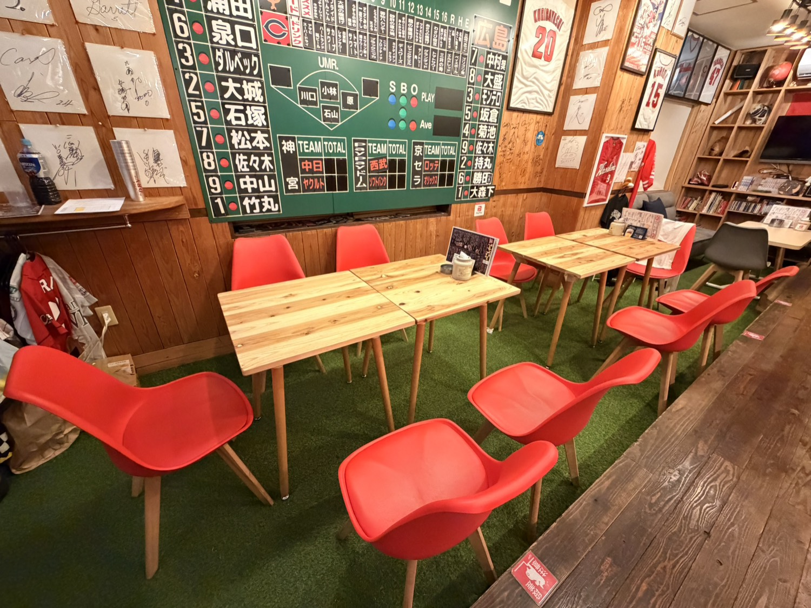
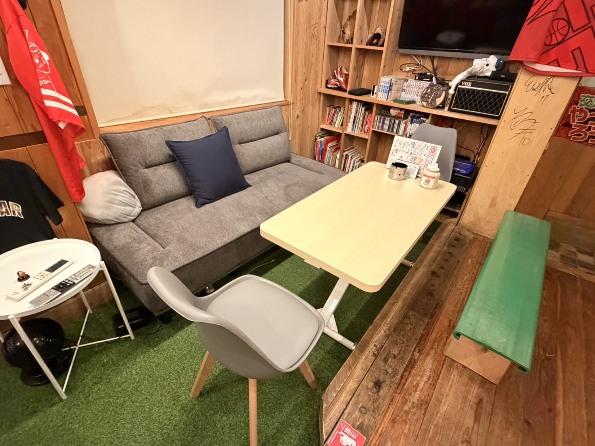

テーブル席
最大10名程度まで対応可能なテーブル席です。グループでのご利用に最適です。
総席数 約30席
カウンター席 6席
一人でも大歓迎です。店員が積極的に話しかけますので、知り合いができたり、一生の友達ができる可能性大です。ぜひカウンターへ！
テーブル席 あり（最大10名程度のテーブルあり）
ソファー席 あり
個室 なし
貸切 可（10名以上からご相談ください）
どの席からもスポーツ観戦がしやすい配置になっています。
ダーツ・プロジェクター・無料Wi-Fiあり。

最大10名程度まで対応可能なテーブル席です。グループでのご利用に最適です。

ゆったりとくつろげるソファー席です。